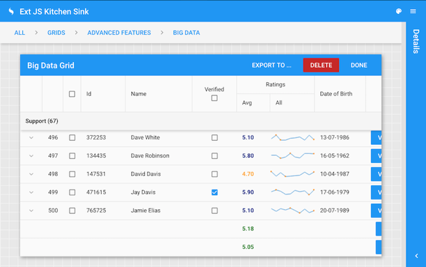

Navegación continua
Problema:¿Cómo mejorar la fluidez en la navegación y exploración de grandes volúmenes de datos?

Cargar automáticamente el siguiente conjunto o segmento de contenido cuando el usuario llegue al final del segmento actual. Para esto:
Capturar el o los eventos producidos por el usuario sobre los componentes visuales de la interfaz y que suponen recuperación de datos (p. ej., alejar, acercar, desplazar, etc.). Los datos recuperados en cada evento deben ser almacenados por segmentos en una “memoria intermedia” y entregados progresivamente al componente visual. La memoria intermedia almacena los datos de manera temporal y por segmentos. Cada vez que la memoria llena su capacidad con una porción de los datos recuperados, envía al componente visual el segmento de datos y vuelve a llenar su almacenamiento con otra porción de datos del conjunto total de datos. De esta manera, la entrega continua de datos realizada por la memoria intermedia evita que la visualización o navegación de datos en el componente visual se detenga hasta recuperar el conjunto de datos completo.
Este patrón agrega fluidez a la navegación y exploración de datos, presentando los datos a medida que el usuario se desplaza por el conjunto de datos. El usuario no indica de manera explícita su intención de visitar un determinado segmento del conjunto de datos. La intención es implícita y es capturada automáticamente.
- Asociación (relacionado a)
- Agregación (tiene un)
- Especialización (es un)
Este patrón se crea instanciando la clase “Buffer” que representa la memoria intermedia que entrega de manera continua los datos al componente visual (clase “UIComponent”).
El evento “event()” del componente es ejecutado cada vez que el usuario realiza una interacción que implica la recuperación de datos. La memoria recupera una porción de datos del modelo (método “retrieve()”) que almacena internamente (atributo “dataSegment”). Una vez que la memoria llena su espacio de almacenamiento, los datos son enviados (método “send()”) al componente, el cual muestra el segmento de datos (método “showData()”).
La de la portada (Imagen 6.40), es un ejemplo de implementación de la librería Sencha Ext Js, donde la tabla datos con 500 registros y sin control de paginación puede ser navegada por el usuario libremente con la rueda de desplazamiento del ratón. Los datos se cargan conforme el usuario se desplaza por la tabla. A diferencia del control de paginación común empleado para navegar por las tablas de datos y donde el usuario hace explícita su intención de navegar a un segmento (página) de contenido, la implementación del patrón permite al usuario navegar libremente por una tabla de datos completa sin experimentar interrupciones por los cambios de página. Otros ejemplos de este patrón pueden ser revisados en los ejemplos indicados en el patrón ContinuousScrolling